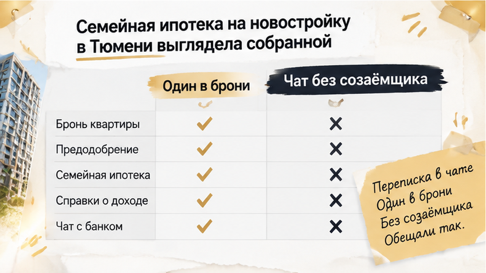
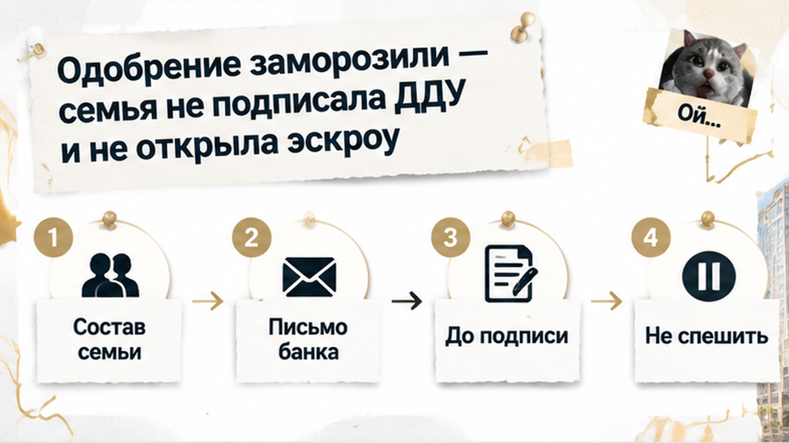
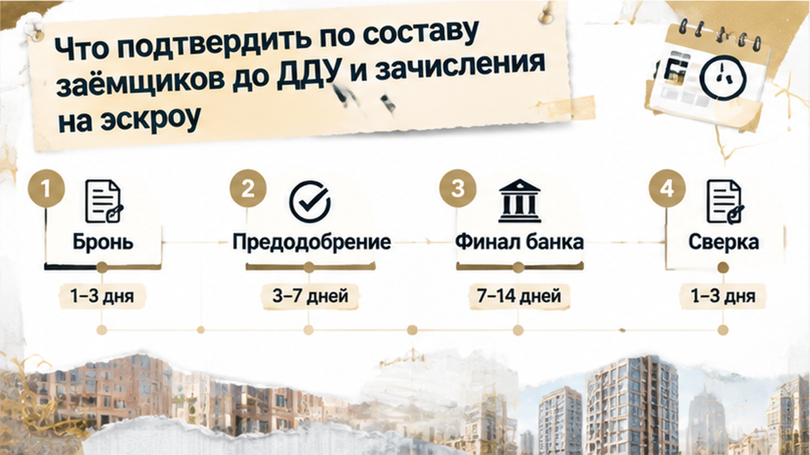
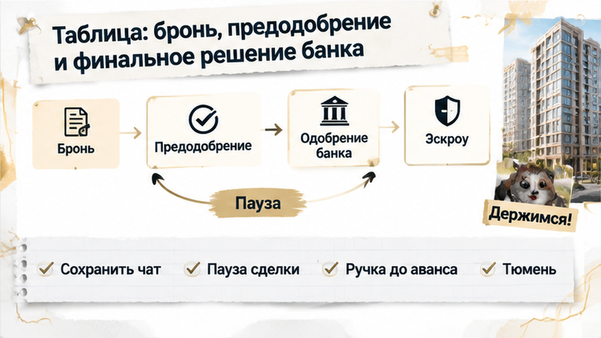

За 3 дня до открытия эскроу банк потребовал добавить супругу в созаёмщики — хотя в брони на двухкомнатную квартиру в тюменской новостройке было указано: семье достаточно одного заёмщика. У родителей двое детей, семейная ипотека получила предварительное одобрение, дата подписания ДДУ была назначена, но затем банк заморозил одобрение и запросил у супруги подтверждённый доход. Менеджер предложил подписать ДДУ, а с банком разобраться потом — семья отказалась: эскроу не открыли, сделку перенесли в другой корпус, а условия брони пересчитали. Похожий стоп перед финалом уже случался в другой ипотечной сделке — за два дня до эскроу банк остановил перевод из-за реквизитов счёта, но здесь вопрос был в том, кто именно отвечает по кредиту.
Разбираю такие ситуации без рекламных обещаний — что проверять в ипотеке, брони и ДДУ до того, как деньги уже должны уйти на эскроу. Подписывайтесь на мой Telegram и MAX, чтобы не пропускать разборы тюменских новостроек.

Семья подбирала двухкомнатную квартиру в новостройке Тюмени. У родителей двое детей, поэтому они рассчитывали на семейную ипотеку. Схема казалась обычной: один супруг подаёт заявку, банк предварительно одобряет кредит, застройщик фиксирует квартиру в брони, затем стороны подписывают договор участия в долевом строительстве и открывают эскроу-счёт.
На этапе предварительного решения банк рассматривал одного родителя как заёмщика. В брони и переписке с отделом продаж не было требования включить второго супруга — семье прямо сообщили, что созаёмщик не нужен. Кредит почти готов, квартира забронирована, дата подписания назначена. Казалось, остались формальности.
Но предварительное одобрение — ещё не окончательное решение по конкретной квартире, цене и составу участников. Бронь временно удерживает объект, а банк после проверки документов, доходов, условий программы и сделки может изменить требования. При эскроу через 3 дня такое изменение уже ломает весь график: супруге нужно подтвердить доход и успеть пройти проверку до даты ДДУ.
В день оформления брони семья получила подтверждение: в кредитной заявке остаётся один заёмщик. Та же позиция сохранилась в переписке с менеджером, поэтому супругу не просили добавлять в кредит и не готовили к новой проверке перед подписанием.
Для покупателя такая переписка звучит как зафиксированное условие. Но бронь застройщика и решение кредитного подразделения — не одно и то же. Менеджер передаёт данные по сделке и объясняет порядок со стороны застройщика, а окончательно решает банк: кто отвечает по кредиту, чьи доходы подтверждать и какие документы нужны.
Поэтому фраза «созаёмщик не нужен» важна, но не заменяет письменного подтверждения банка о финальном составе заёмщиков. Банк может повторно проверить семейное положение и условия программы уже перед ДДУ.
Для семей с общей собственностью этот вопрос особенно чувствителен после изменений, действующих с 1 февраля 2026 года: супруги по общему правилу включаются в ипотеку как созаёмщики. Есть исключения, в том числе связанные с военной ипотекой, гражданством супруга или брачным договором. В конкретной заявке решают программа и документы, а не устное объяснение в офисе продаж.
Семья не спорила с правом банка запросить новые документы. Проблема была в сроках: требование появилось за 3 дня до эскроу, когда супруге ещё предстояло подтвердить доход и пройти проверку. Даже подходящий доход не гарантирует, что решение выйдет до даты подписания ДДУ.
Переписку о составе заёмщиков стоит сохранять вместе с бронью, предварительным решением и графиком сделки. Это не превращает предварительное одобрение в гарантию кредита, но помогает понять, на каком этапе изменились условия и что именно сообщили семье до внесения денег.
За три дня до сделки банк поставил новое условие: супругу нужно добавить в состав заёмщиков и подтвердить её доход. Предварительное одобрение оформляли на одного родителя, а в брони и переписке с менеджером было указано: созаёмщик не нужен.
На бумаге — небольшая правка. На деле пришлось заново собирать документы и ждать проверки дохода. Менеджер предложил подписать ДДУ, а с банком разобраться позже. Но предварительное одобрение ещё не означает, что банк подтвердил состав заёмщиков именно для этой квартиры и на дату сделки.
С 1 февраля 2026 года супруги по общему правилу участвуют в ипотечной сделке как созаёмщики. Есть исключения — например, военная ипотека, отсутствие российского гражданства у супруга или брачный договор. Семье нужно было получить от банка ясный ответ: почему изменился состав участников, какие документы предоставить и сохранится ли прежняя сумма кредита.

После запроса документов банк приостановил одобрение. Нужно было проверить супругу как созаёмщика, её доход и соответствие условиям программы. Пока проверка не завершена, прежний кредит и объём финансирования никто не гарантирует.
Подписывать ДДУ «на всякий случай» семья не стала. Если договор уже заключён, а кредит в последний момент не готов, появляются обязательства и сроки внесения денег. Устное «банк потом согласует» не заменяет финального решения и не открывает эскроу.
В назначенную дату покупатели не подписали ДДУ и не открыли эскроу. Сделку перенесли в другой корпус, сумму брони пересчитали. В договор они вошли только после подтверждения состава заёмщиков и готовности финансирования.
Похожий стоп случается и по другим причинам. В одной сделке банк за два дня до открытия эскроу обнаружил ошибку в реквизитах счёта — разбор этой истории здесь. Там проблема была в чужом юридическом лице, здесь — в составе заёмщиков. Итог один: бронь и предварительная договорённость ещё не означают, что деньги можно безопасно проводить.
Семья выбрала паузу — сначала собрать кредитную часть сделки заново, затем возвращаться к ДДУ и эскроу.
Здесь сбой случился на стыке брони, предодобрения и финальной проверки — для семьи это выглядело одной цепочкой, хотя каждый этап отвечает за своё.
Бронь удерживает квартиру и срок, но не фиксирует состав заёмщиков. Предварительное одобрение не гарантирует кредит: перед ДДУ банк сверяет доходы, объект и условия программы.
До подписания договора запросите у банка письменный ответ: кто будет заёмщиком, должен ли супруг войти в сделку как созаёмщик, какие документы ещё нужны и готов ли банк открыть эскроу после подписания именно этого ДДУ.
Фразу менеджера «созаёмщик не нужен» сохраните в переписке и покажите кредитному специалисту. Она не гарантирует выдачу кредита, зато фиксирует прежнюю позицию. Если требования изменились, попросите письменно объяснить причину, недостающий документ и возможность сохранить квартиру после добавления созаёмщика.
Менеджер отвечает за бронь, цену и оформление со стороны застройщика. Кредитное решение принимает банк — он определяет, кто отвечает по кредиту и достаточно ли документов. Поэтому предложение «подпишите сейчас, а с банком разберёмся потом» переносит риск на покупателя.
Если обстоятельства изменились за несколько дней до сделки, разумнее попросить новый срок на проверку. В описанной ситуации семья не подписала ДДУ и не открыла эскроу, а перенесла бронь на другой корпус с пересчётом условий. Это не сделало новую попытку автоматически безопасной, зато позволило не входить в договор до подтверждения состава участников и готовности кредита.
Похожие остановки происходят и по другим причинам. Банк может обнаружить чужое юридическое лицо в реквизитах счёта и остановить открытие эскроу за два дня до операции: разбор этой ситуации — здесь. В другой сделке одобрение сняли за шесть дней до ДДУ из-за изменения условий ипотеки без первоначального взноса со стороны застройщика: что произошло перед подписанием.
Если банк просит супругу стать созаёмщиком, это ещё не означает отказ. Выясните, какие документы примут, каким станет платёж и когда банк вынесет новое решение. До этого кредит нельзя считать готовым к ДДУ.

Если банк поменял состав заёмщиков перед сделкой, не ориентируйтесь только на слова менеджера. Пришлите бронь, предварительное одобрение и переписку — разберём, что уже подтверждено, а что пока держится на устной договорённости.
| Этап | Что подтверждает | Чего не подтверждает | Что запросить у банка |
|---|---|---|---|
| Бронь квартиры | Квартира временно закреплена, зафиксированы срок и условия бронирования | Окончательное одобрение кредита и состав участников сделки | Что будет с бронью, если банк потребует созаёмщика или дополнительные документы |
| Предварительное одобрение | Банк предварительно оценил заявку по представленным сведениям | Гарантированную выдачу кредита после полной проверки документов | Действует ли одобрение для выбранного корпуса, цены и программы |
| Проверка состава заёмщиков | Кто отвечает по кредиту и какие документы нужны от супругов | Что требование можно заменить договорённостью с менеджером застройщика | Письменное подтверждение: один заёмщик или супруг также входит в сделку |
| Подписание ДДУ | Стороны заключили договор участия в долевом строительстве | Что банк уже готов перечислить кредитные средства | Есть ли финальное решение и выполнены ли условия для открытия эскроу |
| Открытие эскроу | Деньги покупателя и кредита зачисляются по предусмотренной схеме | Что предыдущие обещания заменяют банковскую проверку | Подтверждение суммы, счёта, даты и готовности провести операцию |
| Финальное решение | Банк подтвердил выдачу кредита после проверки документов | Что условия не изменятся при смене цены, корпуса, дохода или состава семьи | Срок действия решения и перечень оставшихся условий |
Таблица помогает разложить документы по местам, но не заменяет ответ банка. Важен не ярлык «одобрено», а подтверждение финансирования именно этой квартиры, с этим составом заёмщиков и в дату подписания ДДУ.
Перед визитом в офис сверяйте бронь, параметры предварительного одобрения и требования кредитного специалиста. Если в одном документе указан один заёмщик, а перед сделкой появляется обязательный созаёмщик, остановите движение к ДДУ до письменного согласования. Три дня — слишком короткий срок, чтобы подтвердить доход супруга и сохранить прежние условия.

Если банк внёс новые условия, запросите список документов, проверьте доход созаёмщика, новый платёж и срок повторного решения. До этого остановите подписание ДДУ и открытие эскроу.
Если банк за три дня до эскроу требует созаёмщика, а в брони обещали одного, стоит ли подписывать ДДУ с надеждой разобраться позже или лучше остановить сделку?
Если перед ДДУ банк добавил новые условия, напишите в Telegram или MAX. Подключусь до брони и помогу разобрать, где заканчивается обещание застройщика и начинается решение банка.
Для разговора подготовьте бронь, предварительное одобрение и переписку с менеджером. Если удобнее обсудить голосом, позвоните: +7 922 001 65 05.
Лучше поставить сделку на паузу и спокойно подтвердить документы, чем входить в ДДУ с неясным составом заёмщиков и незакрытым вопросом по эскроу.